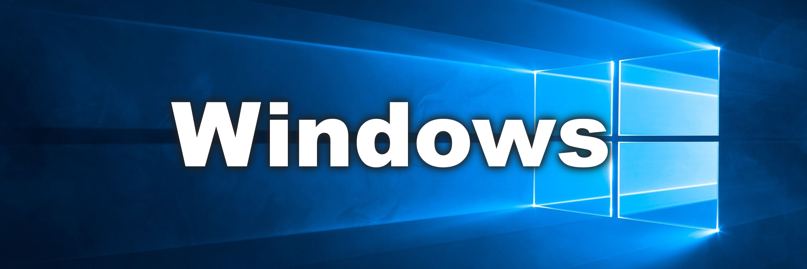

Dacă nu aveți deja instalat Windows 11 Home, vă recomandăm să îl descărcați și să îl instalați mai întâi de aici: https://www.microsoft.com/en-us/software-download/windows11
1. Faceți clic pe Start, mergeți la Setări
2. Faceți clic pe Sistem -> Activare
3. Faceți clic pe Activare sau Schimbare cheie de produs
4. Introduceți cheia de licență pe care ați primit-o după achiziție
5. Gata, acum Windows-ul dvs. este complet activat și veți avea acces la funcțiile Premium.